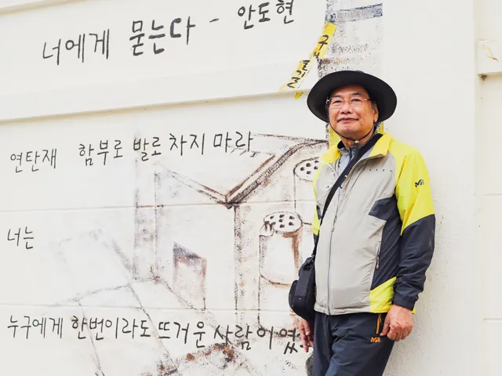
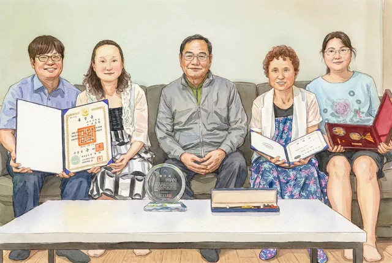

略歴
- 1952
- 全羅北道高敞郡上下面に生まれる
- 1958 – 1970
- 井邑 大興小学校、湖南中学校、湖南高等学校を卒業
- 1974
- 全北大学校 土木工学科 卒業
- 1974 – 1978
- 泰仁中高等学校 数学教師
- 1978 – 1980
- 群山実業専門大学 土木科 教授
- 1979
- 全北大学校大学院 土木工学 修士
- 1980 – 1993
- 国立 群山水産専門大学 海洋土木科 教授
- 1986 – 1987
- 日本 東海大学 海洋土木工学科 訪問教授
- 1990
- 全北大学校大学院 土木工学 水工学 博士
- 1990 – 1991
- 韓独技術協力事業 ドイツ派遣教授
- 1993 – 2020
- 国立 群山大学校 土木工学科 教授
- 2020
- 群山大学校教授を定年退職 — 46年間在職、黄条勤政勲章を受章
- 2024
- 逝去
研究実績および著書
作品活動

- 2017
- 写真撮影を開始 — キヤノン EOS 6D Mark II を購入
- 2018
- 群山市生涯学習館フォトグラファー班を受講、水光写真撮影法を学ぶ
- 2019
- 群山大学校生涯教育院 写真中級班を受講、第5回定期展示会『水光叙情』に出品
- 2019
- 全国写真公募14回入選、全国撮影大会8回入選
- 2019
- 地平線祭り全国写真撮影大会で銅賞を受賞
- 2020 – 2021
- 群山水光写友会 副会長
家族

- 1977. 12
- 結婚
- 1978. 9
- 長女誕生
- 1979. 11
- 次女誕生
- 1985. 2
- 長男誕生